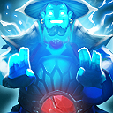

Hello, I’m Tai.
My home is Lagos, City of Dreams.
My home is Lagos, City of Dreams.
A wise man once said to me that with great power comes great responsibilities and that I should always stand-up for the little guy because that’s what it means to be a man.
Growing up was hard for me because I was different from the other kids. There was a deep seated longing to understand how we really feel inside and the way words appear to the mind and ear is naught but a single layer of an onion bulb.
I want to be able to manifest my ideas and abilities into a tangible form and practice the best techniques to accomplish my dreams sometimes like clockwork the smallest pieces do the most heavy lifting through teamwork or sheer perseverance, we must press onwards


Emitter abilities allow the user to generate and possibly control certain things, or alter existing things around them in certain ways.

Transformation abilities allow the user to "transform" their body in a variety of manners. This usually requires a conscious effort to "activate", though training is essential to initiate them reflexively.

Enhances Vision and my ability to perceive things with greater acuity. Often, such an ability lends itself to a wider range of vision-based powers such as telescopic vision and microscopic visual modes

The ability to leap incredibly high and far. first of all a foothold is needed to jump off of. When activated, enables me to leap high, and fall without taking any damage.
I already explained the way my abilities work and that they are split up into 2 facets
If you have enjoyed reading my concept so far, here is a couple more

We all come from various walks of life which is why at any given point in time a persons state of mind can change drastically. The detect ability enables me to read the chemical energy someone else is giving off and determine its state in relation to their mood. For example; happy frustrated, excited, sad, confused, calm

By gathering the energy within myself and my surrounding i imbue: peace, mutual understanding, optimistic love and positive tension to my target. This purges uncertainty and nervous temperament to pave the way for trust and empathy between the target and the user

The transformation ability enables me to generate an external membrane like a plant cell wall from my cells that comes out and surrounds me over an adjustable area span. Within this membrane a fragrance is released and all that come into contact with it becomes fear and doubt free and are transformed into determined, driven and energetic beings of productivity